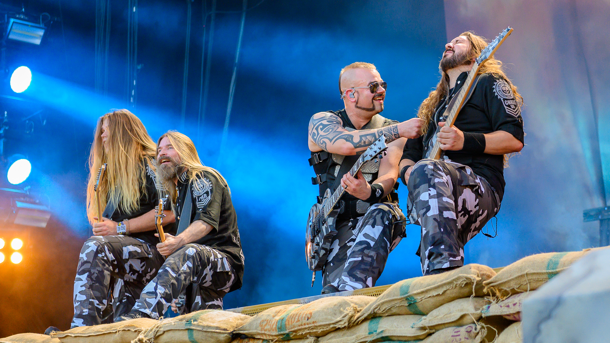
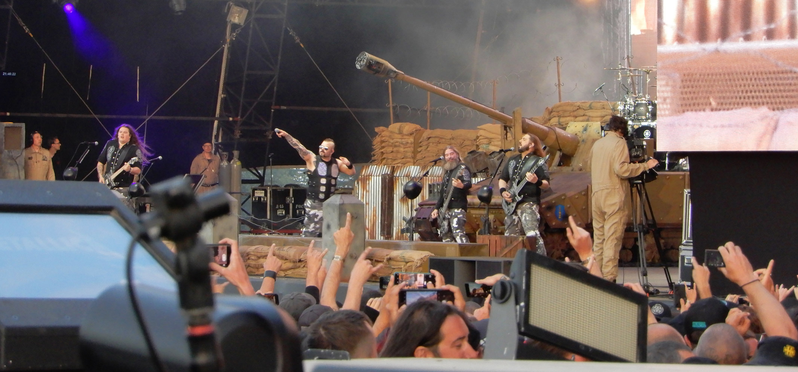

Sabaton: la Storia da cantare
Forse il titolo “la Storia da cantare” suona troppo perentorio, ma posso assicurare che non è stato scelto a caso. Difatti, parlare dei Sabaton significa parlare dei conflitti e battaglie più rilevanti nella storia, quindi parlare della Storia stessa. Ovviamente una Storia monolitica non esiste, ma l’intento di questa band di cui andrò a parlarvi è quantomeno quello di provare a raccontare quante più vicende storiche possibili, nel bene o nel male.
I Sabaton sono un gruppo musicale power metal e nascono a Falun, in Svezia, nel 1999 da Joakim Brodén (frontman) e Pär Sundström. La band è segnata da numerosi abbandoni e rimpasti di organico, i due fondatori però sono sempre rimasti. Quando scrivo, i membri ammontano a 5 e, oltre i due già citati, abbiamo: Hannes Van Dahl, Tommy Johansson e Chris Rörland. Tematica principe dei loro testi sono appunto le guerre del passato, toccando luoghi tremendamente diversi tra loro. Si passa dal Giappone alla Serbia, dal Regno Unito alla Polonia ed ovviamente la Svezia, loro terra natale. Il fatto che il gruppo esplori eventi storici riguardanti così tanti paesi differenti è sicuramente una delle motivazioni che hanno portato al suo successo sempre più crescente.
Altra caratteristica del gruppo molto popolare sono le spettacolari scenografie presenti durante i live della band. I loro concerti dal vivo sono decisamente d’impatto, con la presenza di un carro armato a grandezza naturale e soventi cambi di costume in base alla canzone cantata. Inoltre, sono noti per la simpatia dimostrata sul palco e il loro tentativo di entrare in contatto con la cultura musicale e il pubblico del paese ospitante. Per quanto riguarda l’Italia, ad esempio, nell'ultimo tour il chitarrista ha inaspettatamente cantato Una Canzone d’Amore degli 883 (gli è piaciuta talmente tanto che ci ha fatto pure una cover).
Volendo fare una carrellata di qualche evento bellico narrato c’è davvero l’imbarazzo della scelta. Gli ultimi due dischi The Great War e The War to End All Wars sono entrambi concept album che trattano delle atrocità e dei principali avvenimenti della Prima guerra mondiale. Ma nella loro discografia c’è spazio anche per l’antichità con il brano Sparta, che narra della leggendaria battaglia delle Termopili, oppure Shiroyama, che racconta gli eventi dell’ultima rivolta samurai contro il dominio imperiale Meiji (ciò è raccontato anche nel film “L’ultimo Samurai”). Il nostro paese è coinvolto in diverse canzoni: To Hell and Back, che parla del più decorato soldato americano durante lo sbarco in Sicilia e la battaglia di Anzio; Soldier of Heaven, che tratta della “Guerra bianca” combattuta tra italiani e austroungarici durante la Prima guerra mondiale, ed altri brani ancora.
Ci sarebbe ancora altro da dire, ma direi che quanto detto finora basta a fornire una visione d’insieme su questa peculiare band svedese. La varietà dei contenuti, i temi trattati, l’energia e la scenografia sul palco rendono i Sabaton uno dei gruppi metal più in crescita degli ultimi tempi, sia in Europa che non.
Fonti: Sabaton,Canzoni Metal,Metalhead